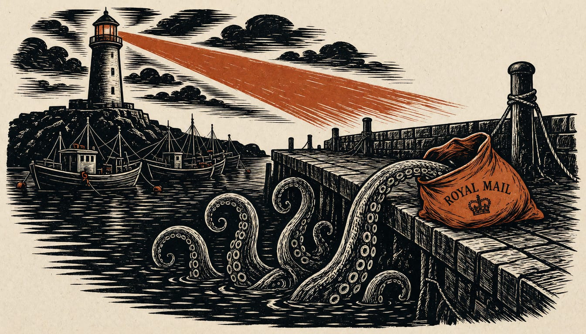

Opinion
Launch the Black Sea mission while Turla sits in government mail
A toolset built to filter NATO and EU correspondence sat on a Romanian government server, and Romania has asked for exactly this mission. Europe's governments should launch it and pay for cyber defence of ports and shipping lanes inside it.

A toolset assessed as part of Russia's FSB was set to search a government's mail for NATO and EU messages, and Russian drones have been crashing near that country since early 2025. On 10 November ESET named the toolset, attributing it to Turla and placing it inside a Romanian government mail server. While that software ran, Romanian politicians were calling for a NATO mission in the Black Sea to deter what they viewed as Russian aggression.
The method found on a government mailbox in the region is built to leave defenders nothing to block: it does not call out, it listens on paths that look like ordinary mail traffic, with no address or timing pattern to shut the door on. Turla has compromised governments, militaries and companies in more than 50 countries, and since 2022 most of the countries it has targeted are European or once closely aligned with Moscow. An intruder that hides like that does not stop at one ministry door. Protection that stays national leaves every harbour in the region to carry the bill alone.
The mail the CerealBox component was built to collect involved NATO and EU institutional addresses, which ESET's study says matches long-standing priorities of Russian intelligence. That is a filter aimed at an alliance's and a union's correspondence, not a list of what was taken. No captured secret has been confirmed; what the reporting gives is the search rule itself, sitting and waiting. A tenant that patient is not passing through. ESET did not find the first infection until about eleven months before it went public. The bill for a quiet intrusion lands late, in cleanup hours and staff wages, and it lands where the work is done. Someone who ends up paying for the hunt should get to pay for the shield.
Those who would wait say only a search rule was confirmed, no captured secret or leaked document, and that a naval mission is the wrong tool for a software flaw. Those are fair terms, and half true. But the search rule was built to filter on sender, subject and attachment and run for years, and ESET found the same method aimed at Kazakh authorities as deportations of Russian exiles began. A rule wired like that is not a curiosity. It is a warning of what the next intrusion will be built to do, and you do not answer it by waiting for a leaked file to prove the point. Romania has already reported drones on its territory and asked for exactly this mission, so the request is on the table. The mission is not a patch for Exchange. It is the shield around the lanes and the coast that no single member state can fund and man on its own. Europe's governments should commit now to it, write cyber defence of ports, shipping lanes and government networks into its remit, and pay through shared European defence funding. The hesitancy over cost and escalation is real, and the way past it is one budget line that pays for both the warship's lane and the terminal's shore power.